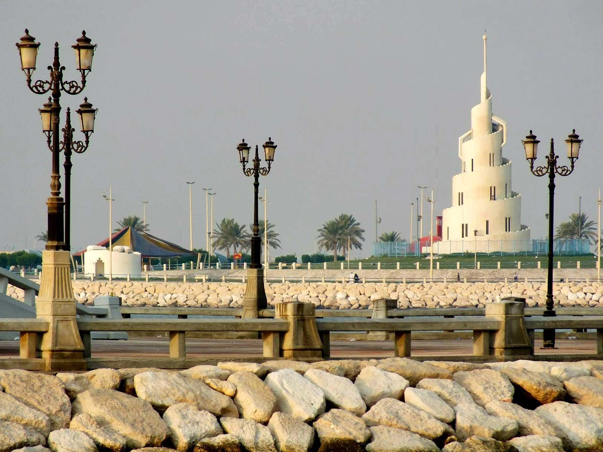
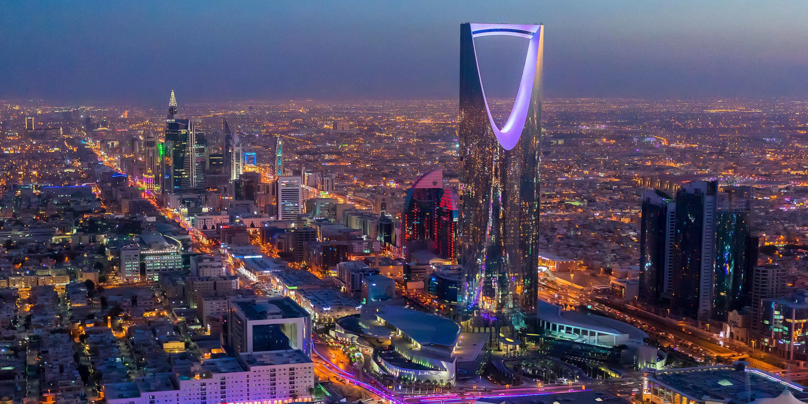
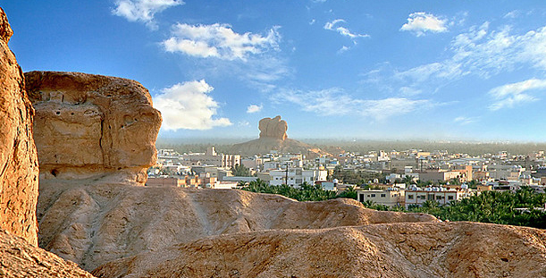

Introduction
In my life, I lived in many places, I was always in the move and when I grew up, I recognized that I actually enjoy moving and changing places, meeting different people, getting shocked by different cultures and social norms.
In this page, I'll list to you number of the places I've been in at any given point in time
Dammam
I was born and raised until I became 14-years-old in Dammam and its nearby cities. I loved the beach, mainly Ras Tanoura Beach and other attractions.
Dammam was the place where I met most of my childhood friends and I still love till today
Riyadh
Riyadh is where I got my first full-time job, my internship and my following work opportunities after graduation.
Riyadh is the capital city of Saudi Arabia, a vibrant sleepless place where I met so many inspiring people and I learned the start-up ecosystem in the region.
I still work there until now and I plan to extend my relationship with it further in the upcoming years.
Al-Ahsa
This place where my family is rooted to. We are called "Hassawi" in the local accent to reflect our origin by the family roots.
This place is beautiful, aggrecutlrual and socialy warm. People from Al-ahsa are known to be kind and welcoming and I'm always proud of being rooted to this place. I had my sun in this place, and since then, this place became a very special place to live in with people.